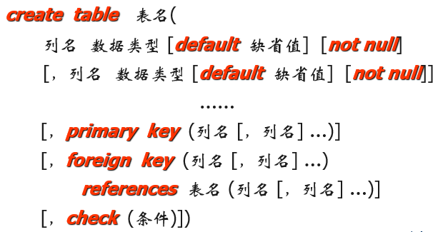
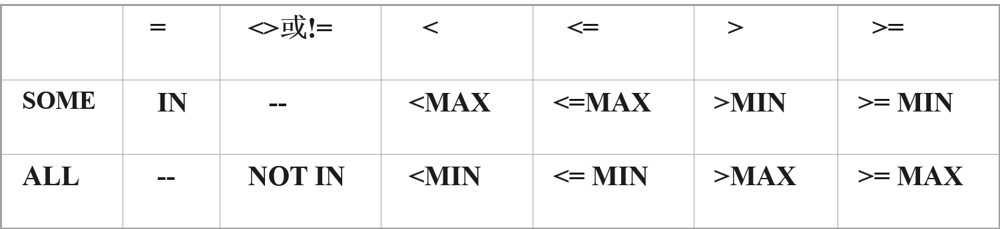
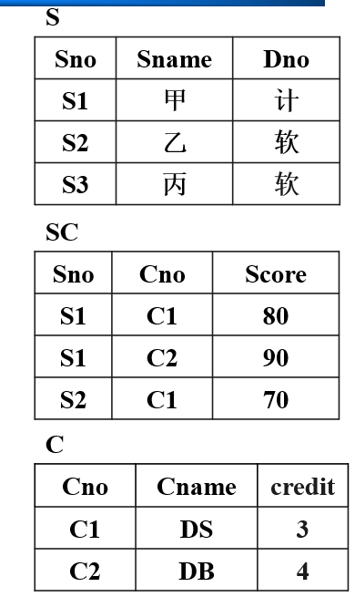
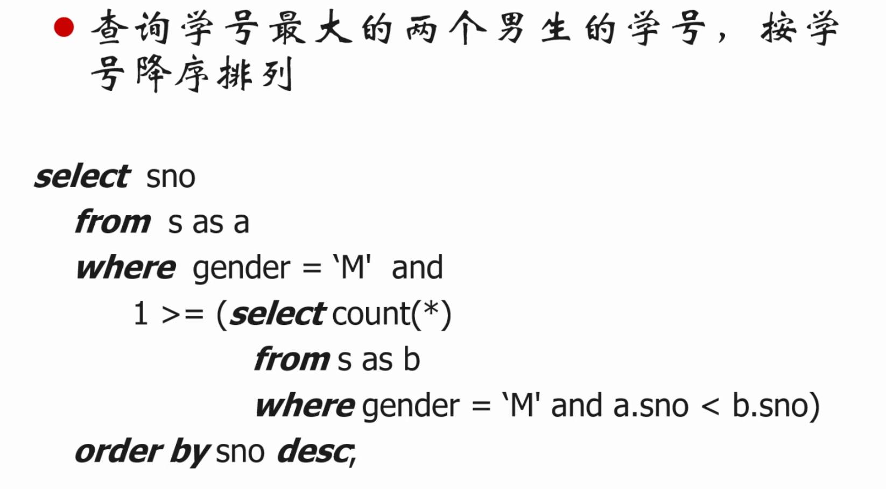
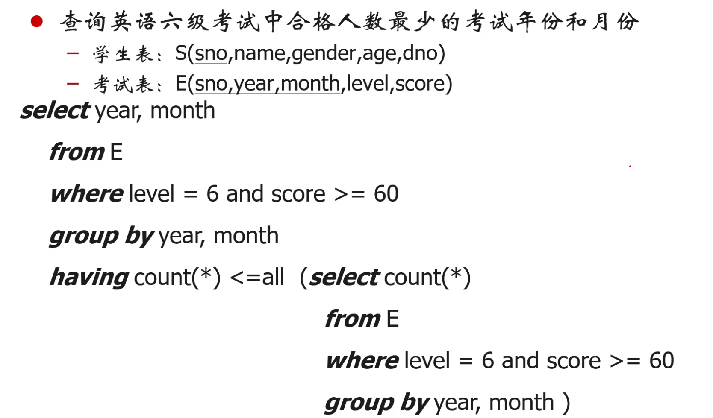

database-system-concepts-3
SQL
SQL概述
特点
一体化
- 集DDL，DML，DCL于一体
- 单一的结构----关系，带来了数据操作符的统一
面向集合的操作方式
- 一次一集合
高度非过程化
- 用户只需提出“做什么”，无须告诉“怎么做”，不必了解存取路径
两种使用方式，统一的语法结构
- SQL既是自含式语言，又是嵌入式语言
对于关键字：大小写不敏感
组成
数据定义语言(DDL)
数据操纵语言 (DML)
数据控制语言(DCL)
事务控制(Transaction Control)
嵌入式SQL和动态SQL(Embedded SQL and Dynamic SQL)
基本数据类型
char(n)：固定长度的字符串
- 长度不够使用空格补齐（取出时会自动
trim把空格去掉）
- 长度不够使用空格补齐（取出时会自动
varchar(n)：可变长字符串(varchar2)
- n是字符串长度上限
int：整数(-231–231-1)
smallint：小整数类型(-215–215-1)
numeric(p，d)：定点数，小数点左边p位，右边q位
real：浮点数
double precision：双精度浮点数
date：日期(年、月、日)
time：时间(小时、分、秒)
基本表的定义
1 | CREATE TABLE <表名> |
如：
1 | CREATE TABLE SC |
常用完整性约束
主码约束： PRIMARY KEY
唯一性约束：UNIQUE
非空值约束：NOT NULL
参照完整性约束：FOREIGN KEY
PRIMARY KEY与 UNIQUE的异同？
PRIMARY KEY：约束数据唯一和非空
UNIQUE：约束数据唯一
表空间
表空间是数据库的逻辑划分，一个表空间只能属于一个数据库，一个数据库可以拥有多个表空间，表空间分为系统表空间和用户定义的表空间。
一个表空间可以包含多个表，一个表只能属于一个表空间。
1 | CREATE TABLE D |
表的属主(Owner)
每个数据库对象都有自己的属主(Owner)，表也有自己的属主(Owner) 。数据库对象的默认属主(Owner)是创建该对象的用户。
属主(Owner)拥有表的所有权限。
修改基本表定义(关系模式)
格式
1 | alter table 表名 |
如：
1 | alter table T add location char(30)； |
（注意：修改列的长度时，只能改长，不能改短）
删除列
1 | ALTER TABLE <基本表名> DROP column <列名>[CASCADE│RESTRICT] |
此处CASCADE方式表示：在基本表中删除某列时，所有引用到该列的视图和约束也要一起自动地被删除。
而RESTRICT方式表示在没有视图或约束引用该属性时，才能在基本表中删除该列，否则拒绝删除操作。
或者：间接删除属性列
把B表中要保留的列及其数据复制到一个新表A中
删除原表B
建立与原表同名的新表B，将A中数据复制到B中
删除表中的约束
1 | alter table 表名 drop constraint 约束名 |
如：
1 | alter table S drop constraint pk_s; |
撤消基本表定义(drop)
- 格式
1 | drop table 表名 |
撤消基本表后，基本表的定义、表中数据、索引都被删除，由此表导出的视图将无法继续使用
索引
基本概念
目的：大部分的查询只涉及数据库中的少量数据，建立索引是加快查询速度的有效手段
建立索引
- DBA或表的属主(即建立表的人)根据需要建立
- 有些DBMS(例如oracle)自动建立以下属性列上的索引
- PRIMARY KEY
- UNIQUE
维护索引
- DBMS自动完成
使用索引
- DBMS自动选择是否使用索引以及使用哪些索引
格式
1 | create [unique/distinct] [cluster] index 索引名 on 表名 (列名 [asc/desc] [,列名 [asc/desc]]…) |
unique(distinct)：唯一性索引，不允许表中不同的行在索引列上取相同值。若已有相同值存在，则系统给出相关信息，不建此索引。系统并拒绝违背唯一性的插入、更新。
cluster：聚集索引，表中元组物理顺序与索引的逻辑(索引)顺序相同。一个基本表上只能建一个聚集索引(该索引可以包含多个列)。
asc/desc：索引表中索引值的排序次序，缺省为asc。
如：
1 | create cluster index s_sno_clu on S(sno); |
索引的删除
格式：
1 | drop index 索引名 |
注意：删除唯一索引后，唯一索引对于数据的约束就消失了
索引的有关说明
可以动态地定义索引，即可以随时建立和删除索引
不允许用户在数据操作中指定索引，索引如何使用完全由DBMS决定
应该在使用频率高的、经常用于连接的列上建索引
索引实现：B+树，散列(hash)
一个表上可建多个索引。索引可以提高查询效率，但索引过多耗费空间，且降低了插入、删除、更新的效率
索引失效
https://segmentfault.com/a/1190000041469451
SQL数据查询基本结构
1 | select A1 , A2 , ... , An |
也就是
语句格式
1 | SELECT [ALL|DISTINCT] <目标列表达式 [，<目标列表达式>] ... |
SELECT子句：指定要显示的属性列FROM子句：指定查询对象(基本表或视图)WHERE子句：指定查询条件GROUP BY子句：对查询结果按指定列的值分组，该属性列值相等的元组为一个组。通常会在每组中作用聚集函数。HAVING短语：筛选出只有满足指定条件的组ORDER BY子句：对查询结果按指定列值的升序或降序排序
PS
如果查询表中不存在的属性值，如：
1 | select 123 from S |
查询结果的集合中，只有一个属性，名为123，每个元组的内容都是123，个数与被查询的表的元组个数相等。
select子句
目标列形式
- 可以为列名，* ，算术表达式，聚集函数
*：表示 “所有的属性”，但对性能有影响
- 带
+，-， *， /的算术表达式，其他算术表达式无法执行
如
1 | select tname, sal*0.95 from T; |
结果集中的两个属性是tname和sal*0.95
重复元组的处理
查询结果默认保留重复元组，因为去重会降低查询性能。若要去掉重复元组，可用关键字distinct或unique指明
from子句
from子句列出查询的对象表
当目标列取自多个表时，在不混淆的情况下可以不用显式指明来自哪个关系
相当于表的笛卡尔积，不是自然连接
一般来说，最多from三个表（性能）
| 查询条件 | 谓词 |
|---|---|
| 比较 | >，<，=，<>，>=，<=，not + 上述运算符 |
| 确定范围 | between … and …，not between …and … |
| 确定集合 | in，not in |
| 判定空集合 | exists，not exists |
| 字符匹配 | like，not like |
| 空值 | is null，is not null |
| 多条件 | and，or |
and的优先级高于or
更名运算
格式
1 | old_name as new_name |
为表和属性重新命名，可出现在select和from子句中
注：as可选，且Oracle数据库中不允许出现as，而是直接空格代替
元组变量
SQL中的元组变量必须与特定的关系相联系，元组变量是通过在from子句中使用as子句来定义的
作用：
- 简化关系名称；
- 比较同一关系的两个元组（必须更名）
如：
1 | select a.sno, sname |
字符串操作
格式
1 | 列名 [not] like ‘字符串’ |
找出满足给定匹配条件的字符串。也就是模糊查询。
匹配规则
“%”
匹配零个或多个字符
“＿”
- 匹配任意单个字符
Escape
- 定义转义字符的命令，以去掉特殊字符的特定含义，使其被作为普通字符看待
- 如escape “\”，定义 \ 作为转义字符，则可用%去匹配%，用\＿去匹配＿
SQL正则表达式
1 | select * |
^ 表示开始
$ 表示结束
[]内部为匹配范围
{}里的内容表示个数，有几位
查询手机号码是以 1开头接着是3或5再加9位的数字 所以这么理解
1开头 表达式为 ^[1]{1} 意为 开始1位里包含1
3或5 表达式为 [35]{1}
9位数字结束 为: [[:digit:]]{9}$ 这里[:digit:]为特殊写法，代表为数字 再加个结束符$
元组显示顺序
1 | order by 列名 [asc | desc] |
- 按字典顺序排序
- 默认升序
1 | select dname，tname |
当排序列含空值时
ASC：排序列为空值的元组最后显示
DESC：排序列为空值的元组最先显示
集合操作
集合并：union
集合交：intersect
集合差： except(minus)
- 提示： 集合操作自动去除重复元组，如果要保留重复元组的话，必须用all关键词指明
样例
查询同时选修了001和002号课程的学生学号
1 | (select sno |
也就是
1 | select a.sno |
聚集函数
平均值：avg
最小值：min
最大值：max
总和：sum
记数：count
如：查询选修了课程的学生人数
1 | SELECT count(distinct sno) FROM SC ; |
使用聚集函数查询的结果集是一个或多个属性(属性取决于聚集函数)的关系，其中只包含一个元组；
count(属性名)和count(*)的区别在于count(*)返回满足条件的元组的个数(即使一个元组的所有属性取值均为null也会被计算在内)，count(属性名)返回该属性中取值不为null的元组个数；不允许在
count(*)中使用distinct；不使用分组的聚集函数，在select子句中，只能出现聚集函数，不能出现其他属性名；
除了
count(*)以外的聚集函数，均忽略null值。如果应用的需求不希望忽略null值，可以使用nvl函数进行处理；聚集函数在输入为空集合的情况下也返回一个关系(一个元组的关系)，结果集中返回值为null。
count函数例外，在输入为空集合的情况下，count函数返回0。
分组命令
1 | group by 列名 [having 条件表达式] |
group by将表中的元组按指定列上值相等的原则分组，然后在每一分组上使用聚集函数，得到单一值having则对分组进行选择，只将聚集函数作用到满足条件的分组上，从关系代数角度来看，having是在分组之后进行的选择运算
注意
- GROUP BY子句的作用对象是关系，包括基本表和查询中间结果
- 分组方法：按指定的一列或多列值分组，值相等的为一组
- 使用GROUP BY子句后，SELECT子句的列名列表中只能出现分组属性和聚集函数
- 无组时返回空集合
样例
- 查询每一年龄组中男学生(超过50人)的人数(按照年龄降序排序)
1 | select age，count(sno) |
比较where 和having的异同
相同：二者均是选择运算
不同：二者的作用对象不同，
where的作用对象是元组，having的作用对象是分组
空值
空值测试
1 | is [not] null |
测试指定列的值是否为空值
示例
找出年龄值为空的学生姓名
1 | select sname |
不可写为where AGE = null，因为结果会是null
注意事项
除
is [not] null之外，空值不满足任何查找条件如果
null参与算术运算，结果为null如果
null参与比较运算，结果为null，按照false处理如果
null参与聚集运算，除count(*)之外其它聚集函数都忽略null
空值与空集合
1 | select count(*),max(score) |
相当于通过where(false)筛掉了sc中的所有元组。
1 | select sno,max(score) |
原理与上面类似，但由于所要选取的两个属性是在null上进行select，且没有count(*)，那么会返回空集合。
1 | select sno,max(score) |
通过having筛掉了所有分组后的组，所以也返回空集合，结果跟上面一样。（注意这个跟where的区别）
嵌套子查询(Nested Subqueries)
基本知识
主要用途
集合成员资格
集合之间的比较
集合基数的测试
- 测试集合是否为空
- 测试集合是否存在重复元组
分类
不相关子查询
- 子查询的查询条件不依赖于父查询
相关子查询
- 子查询的查询条件依赖于父查询
二者的区别在于：元组变量的作用域不同
集合成员资格
成员资格判断：
1 | 表达式 [not] in 集合 |
判断表达式的值是否在集合中，可以是枚举集合也可以是子查询的查询结果。
即：
1 | (A1,A2,…,An) in (SELECT A1,A2,…,An FROM R WHERE ……) |
示例
- 查询张军和王红同学的所有信息（这里用的是枚举集合）
1 | select * from S where sname in (’张军’，’王红’); |
- 选修了c1号课程的学生的学号及姓名（这里用的是子查询结果）
1 | select sno，sname |
一个问题
以下SQL的查询结果为什么会是空集合。
1 | select dno from d where dno not in (select dno from s ); |
这与Oracle的逻辑有关，Oracle中，in用的是or + '='，not in用的是and + '<>'，如子查询完成后，执行第一个父查询就是判断d1是否不在子查询结果中,执行的就是null<>d1 and d3<>d1 and d3<>d1 and d3<>d1 and null<>d1 and d2<>d1 and d2<>d1 and null<>d1 and d1<>d1 and d1<>d1，只要子查询中有一个null，那么父查询执行结果就是null，导致最后成为空集合。
如何避免：
1 | select dno from d |
子查询的限制
- 不能使用
ORDER BY子句ORDER BY只能有一个且只能对最终结果使用。
集合之间的比较
当能确切知道内层查询返回单值时，可用比较运算符。（也就是可以将值与关系进行比较，在关系代数中肯定是不行的）。这是商用数据库产品对关系数据库理论的突破。
样例
- 查询与刘晨在同一个学院学习的学生(全校只有一位刘晨同学)
1 | SELECT sno，sname，dno |
- 查询选修c1课程并且成绩高于c1课平均成绩的学生学号
1 | select sno |
注意
子查询一定要跟在比较运算符之后，错误样例如：
1 | SELECT sno，sname，dno |
some/all子查询
表达式 比较运算符 some (子查询)- 表达式的值至少与子查询结果中的一个值相比满足比较运算符
- 相当于
表达式 比较运算符 all (子查询)- 表达式的值与子查询结果中的所有的值相比都满足比较运算符
- 相当于
样例
- 查询其他学院中比d1学院某个学生年龄小的学生姓名和年龄
1 | SELECT sname，age |
- 查询平均成绩最高的学生学号
1 | select sno |
聚集函数实现
Oracle数据库特例
在Oracle中允许两个聚集函数嵌套使用，但不推荐使用，不方便数据库迁移。
1 | select sno |
测试是否为空关系
in后的子查询与外层查询无关，每个子查询执行一次，而exists后的子查询与外层查询有关，需要执行多次，称之为相关子查询。以上用的都是不相关子查询，接下来将用到相关子查询。
测试集合是否为空
1 | [not] exists (子查询) |
判断子查询的结果集合中是否有元组存在
EXISTS谓词- 存在量词 。
- 对于
EXISTS而言：- 若子查询结果非空集，
exists返回真值。 - 若子查询结果为空集，
exists返回假值。
- 若子查询结果非空集，
- 由
EXISTS引出的子查询，传统意义认为其目标列表达式通常都用 * ，因为带EXISTS的子查询只关注是否有元组，给出列名无实际意义。但是 * 会带来查询性能问题，建议使用列名或者常数。
NOT EXISTS谓词则与上面相反。
样例
- 查询选修了C1号课程的学生的学号及姓名
相关子查询：
1 | select sno，sname |
不相关子查询：
1 | select sno，sname |
相关子查询的特别之处在于：其本身是不完整的，必须包含一些外层查询提供的参数。
相关子查询的步骤
首先取外层查询中关系的第一个元组，根据它与内层查询相关的属性值处理内层查询，若
WHERE子句返回值为真，则取此元组放入结果集合中；然后再取外层关系的下一个元组；
重复这一过程，直至外层关系全部检查完为止。
“全部”概念处理方法
“全部” 的概念在sql中的三种书写方法:
超集
superset：not exists (B except A)
关系代数：
not in(not in)
关系演算：
not exists(not exists)
样例：查询选修了全部课程的学生学号
- 超集
superset：
1 | select sno |
- 除法实现：
1 | select sno from s |
关系演算：
直接比较数量（取巧的方法，可能并不普适）：
1 | select sno |
测试是否存在重复元组
测试集合是否存在重复元组
1 | unique (子查询) |
如果子查询结果中没有重复元组，则返回true
例如：查询至少选修了两门课程的学生姓名
1 | select sname |
PS.如果不使用Unique上述查询如何实现
1 | select sname |
复杂查询—from子句中的子查询
1 | (子查询) as 关系名(列名，列名，…) |
SQL允许在from子句中使用子查询表达式。任何select-from-where表达式返回的结果都是关系，因此可以被插入到另外一个select-from-where中关系可以出现的任何位置。
比如:
1 | select sname , avg_score |
lateral
from子句嵌套的子查询中不能使用来自同一from子句的其他关系的相关变量。
从SQL:2003开始，SQL标准允许from子句中的子查询用关键字lateral作为前缀，以便访问同一from子句中在它前面的表或子查询的属性
1 | select name, salary, avg_salary |
With子句
with子句提供定义一个临时视图的方法，这个定义只对于with子句出现的那条查询有效。
如：查询最高成绩的学生学号
1 | With max_score (mscore) as select max(score) from sc |
标量子查询
标量子查询：SQL允许子查询出现在返回单个值的表达式能够出现的任何地方，只要该子查询只返回一个包含单个属性的元组。
也就是说，单个属性的元组与该属性在SQL中没有区别，但从技术（关系代数）上讲，标量子查询虽然只包含单个元组，类型仍然是关系。
不带from子句的标量子查询
某些查询需要计算，但是不需要引用任何关系。某些查询可能包含from子句的子查询，但是高层查询不需要from子句。
如：查询平均没问教师讲授的课程段数，其中有多位老师所讲授的课程段对每位教师计数一次。
(select count(*) from teaches) / (select count(*) from instructor);
上述SQL在某些DBMS中会报错，因为没有from子句，有些DBMS创建一个虚关系，比如Oracle中的dual。
select (select count(*) from teaches) / (select count(*) from instructor) from dual;
SQL的数据修改功能
插入操作
- 插入一条指定了值的元组：
1 | insert into 表名 [(列名[，列名]…] values (值 [，值]…) |
- 插入子查询结果中的若干条元组
1 | insert into 表名 [(列名[，列名]…] (子查询) |
如：将平均成绩大于90的学生加入到EXCELLENT中
1 | insert into EXCELLENT ( sno, score) |
INTO子句
指定要插入数据的表名及属性列
属性列的顺序可与表定义中的顺序不一致
没有指定属性列：表示要插入的是一条完整的元组，且属性列顺序与表定义中的顺序一致
指定部分属性列：插入的元组在其余属性列上取空值
VALUES子句
- 提供的值必须与INTO子句匹配
- 值的个数
- 值的类型
完整性约束
DBMS在执行插入语句时会检查所插元组是否破坏表上已定义的完整性规则
实体完整性
参照完整性
用户定义的完整性
- 对于有NOT NULL约束的属性列是否提供了非空值
- 对于有UNIQUE约束的属性列是否提供了非重复值
- 对于有值域约束的属性列所提供的属性值是否在值域范围内
习题
where中不能有聚集函数
